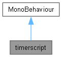
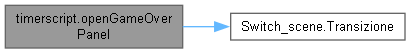
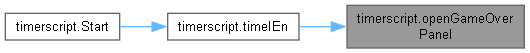
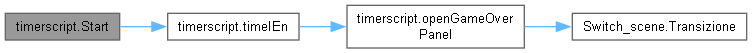
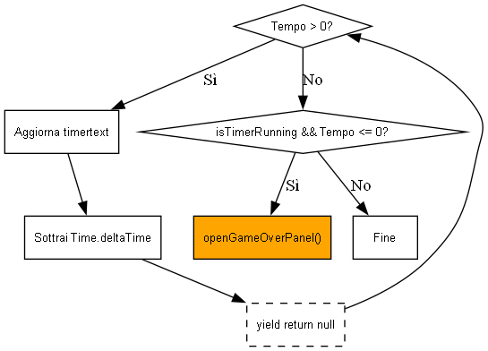
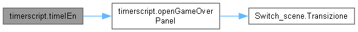
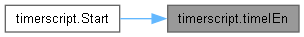
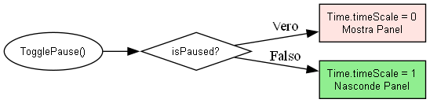

Loading...
Searching...
No Matches
timerscript Class Reference
Gestisce il conto alla rovescia, il sistema di pausa e l'attivazione del Game Over. More...
Inheritance diagram for timerscript:

Collaboration diagram for timerscript:

Public Member Functions | |
| void | TogglePause () |
| Alterna lo stato di pausa del gioco, agendo sul Time.timeScale. | |
| void | StopTimerAndFinish () |
Private Member Functions | |
| void | Start () |
| IEnumerator | timeIEn () |
| Coroutine che decrementa il tempo ogni frame. | |
| void | openGameOverPanel () |
| Attiva il pannello di fine gioco e avvia la transizione scenica. | |
Private Attributes | |
| GameObject | GameOver_panel |
| GameObject | panel_pausa |
| TextMeshProUGUI | timertext |
| float | Duration |
| float | currentTime |
| bool | isTimerRunning = false |
| bool | isPaused = false |
Detailed Description
Gestisce il conto alla rovescia, il sistema di pausa e l'attivazione del Game Over.
Member Function Documentation
◆ openGameOverPanel()
|
private |
Attiva il pannello di fine gioco e avvia la transizione scenica.
Here is the call graph for this function:

Here is the caller graph for this function:

◆ Start()
|
private |
Here is the call graph for this function:

◆ StopTimerAndFinish()
| void timerscript.StopTimerAndFinish | ( | ) |
◆ timeIEn()
|
private |
Coroutine che decrementa il tempo ogni frame.

Here is the call graph for this function:

Here is the caller graph for this function:

◆ TogglePause()
| void timerscript.TogglePause | ( | ) |
Alterna lo stato di pausa del gioco, agendo sul Time.timeScale.

Member Data Documentation
◆ currentTime
|
private |
◆ Duration
|
private |
◆ GameOver_panel
|
private |
◆ isPaused
|
private |
◆ isTimerRunning
|
private |
◆ panel_pausa
|
private |
◆ timertext
|
private |
The documentation for this class was generated from the following file:
- C:/Users/semer/Documents/GitHub/EscapeRoom/Assets/scripts/timerscript.cs